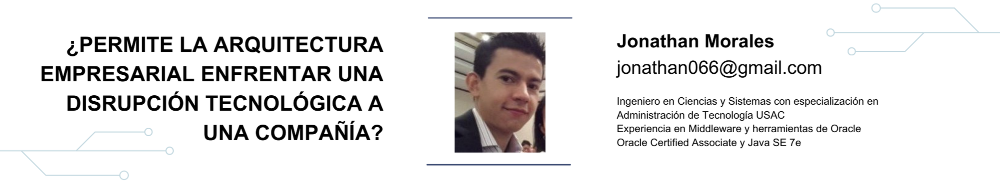

11 ¿Permite la arquitectura empresarial enfrentar una disrupción tecnológica a una compañía?

11.2 Artículo
Actualmente las organizaciones se enfrentan constantemente a los distintos cambios del mercado en el cual participan. Dichos cambios son producto de diversos factores tanto internos como externos.
El factor externo es determinado por el ambiente de negocios, es decir, el comportamiento del mercado que varía cuando emerge un nuevo producto o tecnología afectando las preferencias y exigencias de los consumidores. Si una organización no tiene la capacidad para reaccionar ante estos cambios indudablemente mermarán sus operaciones debido a la baja demanda de sus productos o servicios.
En cuanto al factor interno, los cambios van relacionados a la implementación de tecnologías que le permiten realizar sus procesos de distinta forma para responder de mejor manera a lo esperado por el mercado y ser competitivos.
Pero, ¿qué le garantiza a una organización responder ante cambios de este tipo? No hay una sola respuesta para ello, pero se busca determinar en qué medida una organización puede enfrentarlo si dispone de una arquitectura empresarial definida, la cual le provee de una estructura, procesos y tecnología orientada a cumplir los objetivos del negocio. Para ello se analizará si la arquitectura empresarial le provee dicha facilidad de adaptación y respuesta a una disrupción tecnológica.
La clave para el éxito en las empresas radica en una constante innovación y utilización de la tecnología disponible.
¿QUÉ ES UNA DISRUPCIÓN TECNOLÓGICA Y CÓMO PUEDE AFECTAR A UNA COMPAÑÍA?
Una disrupción tecnológica es aquella que emerge y viene a modificar los patrones de consumo o utilización de algún producto o servicio. La forma en que una disrupción puede afectar a una compañía se debe a que cuando emerge en un mercado desplaza la tecnología en uso, con la que se realizan diversas operaciones y procesos.
Una disrupción tecnológica puede analizarse desde la perspectiva de los modelos de negocio y no únicamente como tecnología entrante, de modo que se convierte en un aspecto importante de considerar para los interesados en el negocio [5].
Para ello, el reto consiste en identificar apropiadamente las fases de un proceso cuando se enfrenta a una disrupción tecnológica, ya que existen riesgos asociados en la adopción de nuevas tecnologías que de otra manera una empresa no podría hacerle frente y sobrevivir a nuevas exigencias del mercado.
Una disrupción tecnológica puede provocar que una empresa ya establecida sea desplazada por un nuevo competidor que encuentra nuevas oportunidades de negocio. Por esto mismo, aunque existan tecnologías predominantes que cubran una necesidad, eventualmente el segmento de mercado irá adoptando la nueva tecnología, lo que se convierte en un punto a considerar en el corto o mediano plazo para toda organización.
En el proceso de identificación de una disrupción tecnológica, Anirban Ganguly menciona en su publicación [3] que debe evaluarse tanto procesos, productos o modelos de negocio, ya que es una corriente que lleva a la destrucción del modelo de negocio al hacerlo obsoleto e insuficiente para dar respuesta a las necesidades de operación.
Deben identificarse los impactos operativos y financieros derivados de una disrupción tecnológica. Una disrupción tecnológica puede afectar tanto a algunas funciones como procesos en la organización, entre las cuales se puede considerar [6]:
- Pérdida o reducción de ingresos por ventas, Los ingresos por ventas pueden retrasarse.
- Algunos gastos pueden aumentar en la búsqueda de ser más ágiles y responder a los cambios.
- Regulaciones que cambian debido a la disrupción tecnológica (por ejemplo, nuevas regulaciones bancarias para utilización de nuevos servicios)
- Insatisfacción del cliente o pérdida de mercado.
- Retraso en la ejecución de nuevos planes de negocio.
ESQUEMA DE UNA ARQUITECTURA EMPRESARIAL Y EL ASPECTO TECNOLÓGICO EN UNA DISRUPCIÓN
Para que una empresa pueda responder a las necesidades del mercado, debe tener procesos y tecnología que estén orientados a alcanzar sus objetivos organizacionales, pero cada vez los procesos son más complejos y deben ser flexibles para lograr lo anterior.
Para ello debe disponerse de una arquitectura organizacional la cual “parte del establecimiento de un conjunto de directrices arquitectónicas que permitan asegurar un desarrollo armónico entre los modelos y necesidades de la empresa, con los procesos de negocio y las tecnologías de la información” [1].
En cuanto al aspecto tecnológico y la disrupción en una empresa, la arquitectura empresarial fomenta que la ejecución de procesos soportados por las tecnologías y asimismo “implementar nuevas tecnologías como respuesta a los cambios y necesidades de la empresa, en la medida en que las prioridades cambian” [1].
Según B. Scott, en su libro “An Introduction to enterprise architecture”[7], cualquier organización puede ser estructurada de acuerdo con tres niveles jerárquicos que le permitirán responder ante cambios en el modelo de negocio al enfrentar una disrupción:
- EstrategÍa: la organización define sus mercados, productos/servicios, objetivos y metas.
- Procesos: operaciones de negocio alineados con los objetivos y metas estratégicas.
- Sistemas de TI: buscan automatizar y dar soporte a los procesos de negocio.
Ahora bien, para sobrevivir una disrupción, Maxell Wessel [4] menciona que debe evaluarse inicialmente el aspecto interno de una compañía y la forma sistemática en que la disrupción va emergiendo, para proveer una respuesta estratégica, de donde las acciones parten de una arquitectura empresarial que lo permita. Para ello se propone identificar [4]:
- Fortalezas del modelo de negocio frente a la disrupción.
- Identificar las ventajas competitivas.
- Condiciones que podrían ayudar o frenar la disrupción.
En una arquitectura organizacional, las fortalezas frente a la disrupción se construyen a partir del proceso principal (core) de forma que el negocio pueda operar siguiendo los objetivos y perseguir una ventaja en el rendimiento del aspecto tecnológico. También implica considerar los aspectos vulnerables en la integración de procesostecnología para fortalecerlos sin afectar las operaciones, que en todo caso es el objetivo de la arquitectura organizacional.
RESPUESTA A UNA DISRUPCIÓN MEDIANTE LA ARQUITECTURA EMPRESARIAL
Para responder a los cambios inherentes a una disrupción tecnológica, una organización debe establecer un modelo operativo en el cual creará una relación entre los procesos internos, los datos, la tecnología y los clientes para determinar el grado que debería tener en cuanto a la integración y estandarización requerida para alcanzar los objetivos deseados del negocio.
Los objetivos se convierten entonces en el factor principal para adaptar los procesos de negocio y hacer frente a una disrupción incluyendo el aspecto tecnológico en dichos procesos.
Este modelo operativo es el que permite enfocar los esfuerzos de la organización en los procesos que definen al negocio como tal, esto es, que todas las actividades, procesos y tecnologías estén orientados a satisfacer las demandas y necesidades de los procesos núcleo (core) del negocio.
Figura 11.1: Dimensiones de la respuesta para una organización [2]
Como se observa en la figura anterior, Adner en su artículo “Old technology responses to new technology threats” [2] (Respuestas tecnológicas antiguas a las nuevas amenazas tecnológicas), describe varios factores en los cuales la tecnología debe responder a nuevas amenazas, y en el contexto de una disrupción tecnológica es la forma en que la arquitectura empresarial debe enfocarse para responder mediante estrategias desde el modelo operativo.
Para ello, Adner considera tres dimensiones que debe incluir el modelo operativo:
- La posición en el mercado, en el cual debe replegarse para mantenerse.
- El mercado objetivo en el cual debe reubicarse.
- Y finalmente la Innovación tecnológica adicional que se convierte en una carrera para obtener ventajas competitivas mediante nuevos procesos e innovaciones que den valor a los mismos.
Asimismo, para responder a una disrupción tecnológica con una arquitectura empresarial definida, debe considerarse que depende en gran medida de la capacidad de la empresa para adoptar nuevos procesos y de la heterogeneidad de la demanda para que los atributos tecnológicos de la empresa le permitan dicha flexibilidad, tal como lo explica Adner.
En definitiva, se puede determinar que la arquitectura empresarial puede ayudar a enfrentar una disrupción tecnológica al permitir una respuesta más pronta en la adopción de nuevos procesos y tecnologías, al mismo tiempo que faculta a una organización a estructurarse de acuerdo a las necesidades del mercado (como menciona Habtay en la construcción de un marco de trabajo para un modelo de negocio disruptivo [5]), siempre teniendo un enfoque primario y modificando el modelo de negocios en conjunto con el modelo operativo provisto de una arquitectura empresarial definida.
11.3 Referencias
- [1] Arango, Martín et al. “Arquitectura Empresarial Una visión general”. Paper Ingenierías, Universidad de Medellín, Colombia. 2010.
- [2] Adner, Ron et al. “Old technology responses to new technology threats: demand heterogeneity and technology retreats”. Oxford University Press. Reino Unido. 2010.
- [3] Ganguly, Anirban et al. “Identification, Classification, and priorization of risks associated with a disruptive technology process”. International Journal of Innovation & Technology Management. World Scientific Publishing Company. EEUU. 2011.
- [4] Wessel, Maxwell; Christensen, Clayton. “Surviving disruption”. Harvard Business Review. EEUU. 2012.
- [5] Habtay, Salomon; Holmén, Magnus. “From disruptive technology to disruptive business model innovation: In need for an Integrated Conceptual Framework”. Paper Universidad de Witwatersrand. Sudáfrica. 2010.
- [6] Owyang, Jeremiah. “Four disruption themes for business”. Altimeter’s Research Team. Abril 2013. http://www.altimetergroup.com
- [7] B. Scott, “An Introduction to enterprise architecture”. Bloomington: Authorhouse. 2005.